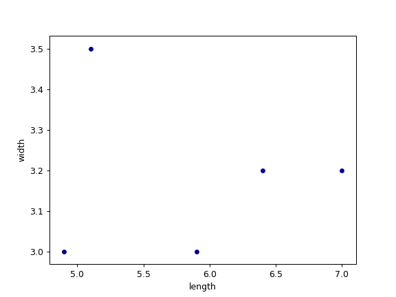
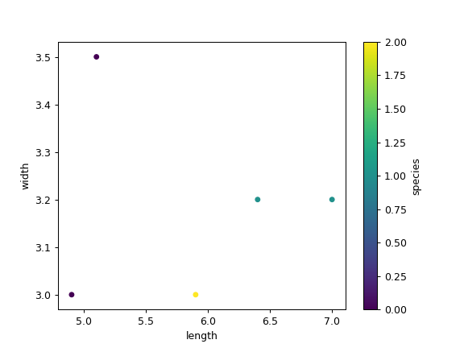

pandas.DataFrame.plot.scatter¶
-
DataFrame.plot.scatter(x, y, s=None, c=None, **kwds)[source]¶ Create a scatter plot with varying marker point size and color.
The coordinates of each point are defined by two dataframe columns and filled circles are used to represent each point. This kind of plot is useful to see complex correlations between two variables. Points could be for instance natural 2D coordinates like longitude and latitude in a map or, in general, any pair of metrics that can be plotted against each other.
Parameters: - x : int or str
The column name or column position to be used as horizontal coordinates for each point.
- y : int or str
The column name or column position to be used as vertical coordinates for each point.
- s : scalar or array_like, optional
The size of each point. Possible values are:
- A single scalar so all points have the same size.
- A sequence of scalars, which will be used for each point’s size recursively. For instance, when passing [2,14] all points size will be either 2 or 14, alternatively.
- c : str, int or array_like, optional
The color of each point. Possible values are:
- A single color string referred to by name, RGB or RGBA code, for instance ‘red’ or ‘#a98d19’.
- A sequence of color strings referred to by name, RGB or RGBA code, which will be used for each point’s color recursively. For instance [‘green’,’yellow’] all points will be filled in green or yellow, alternatively.
- A column name or position whose values will be used to color the marker points according to a colormap.
- **kwds
Keyword arguments to pass on to
pandas.DataFrame.plot().
Returns: - axes :
matplotlib.axes.Axesor numpy.ndarray of them
See also
matplotlib.pyplot.scatter- Scatter plot using multiple input data formats.
Examples
Let’s see how to draw a scatter plot using coordinates from the values in a DataFrame’s columns.
>>> df = pd.DataFrame([[5.1, 3.5, 0], [4.9, 3.0, 0], [7.0, 3.2, 1], ... [6.4, 3.2, 1], [5.9, 3.0, 2]], ... columns=['length', 'width', 'species']) >>> ax1 = df.plot.scatter(x='length', ... y='width', ... c='DarkBlue')
And now with the color determined by a column as well.
>>> ax2 = df.plot.scatter(x='length', ... y='width', ... c='species', ... colormap='viridis')
